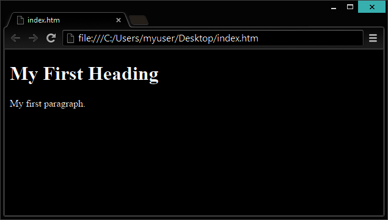

¿Qué es PHP?
- PHP es un acrónimo de "PHP: Hypertext Preprocessor".
- PHP es un lenguaje de programación de código abierto.
- Los scripts PHP se ejecutan en el servidor.
PHP es un lenguaje de script del lado del servidor, y una herramienta poderosa para hacer páginas web dinámicas e interactivas.
¡PHP es un genial y popular lenguaje!
- Es lo suficientemente poderoso para ser el núcleo de uno de los sitios de bloggeo más grandes del mundo (WordPress)!
- Es lo suficientemente profundo para hacer funcionar la red social más larga (Facebook)!
- Es lo suficientemente fácil para ser el primer lenguaje del lado del servidor de un principiante.
¿Qué puede hacer PHP?
- PHP puede generar páginas con contenidos dinámicos.
- PHP puede crear, abrir, leer, escribir, borrar y cerrar archivos en el servidor.
- PHP puede recopilar datos de formularios.
- PHP puede enviar y recibir cookies.
- PHP puede añadir, borrar, modificar los datos de su base de datos.
- PHP puede ser usado para el control de acceso de los usuarios.
- PHP puede cifrar los datos.
Con PHP no está limitado a la salida HTML. Usted puede emitir imágenes, archivos PDF y películas Flash. También puede exportar cualquier texto, como XHTML y XML.
Ejemplo PHP
Pequeño ejemplo html:
<!DOCTYPE html>
<html>
<head>
<title>Page Title</title>
</head>
<body>
<?php
echo "¡Mi primer script PHP!";
?>
</body>
</html>
Antes de continuar...
Debe poseer los siguientes conocimientos.
¿Por qué PHP?
- PHP funciona en varias plataformas (Windows, Linux, UNIX, Mac OS X, etc.)
- PHP es compatible con casi todos los servidores (Apache, IIS, etc.)
- PHP soporta un amplio rango de bases de datos.
- PHP es gratis. Descargalo de la página principal de PHP: www.php.net
- PHP es facil de aprender y funciona eficientemente del lado del servidor.
Con PHP no estás limitado
¿Que necesito?
Para empezar a usar PHP, necesitas:
Encontrar un host web con soporte para PHP y MYSQL.
Instalar un servidor web en tu propia PC, luego instalar PHP y MYSQL.
Utilice un servicio web con soporte PHP
Si el servidor posee activado soporte para PHP no es necesario hacer nada.
Basta con crear algunos archivos .php, colocarlos en su directorio web y el servidor los analizará de forma automática.
No es necesario compilar nada ni instalar otras herramientas.
Dado que PHP es libre, la mayoría de servidores web ofrecen soporte para PHP.

Configure PHP en su PC
Sin embargo, si el servidor no es compatible con PHP, es necesario:
Instalar un servidor web
Instalar PHP
Instalar una base de datos, tal como MySQL
El sitio web oficial de PHP (PHP.net) tiene instrucciones de instalación para PHP: http://php.net/manual/en/install.php